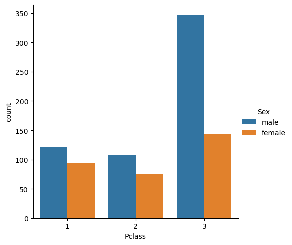
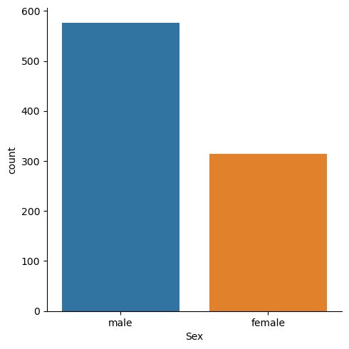
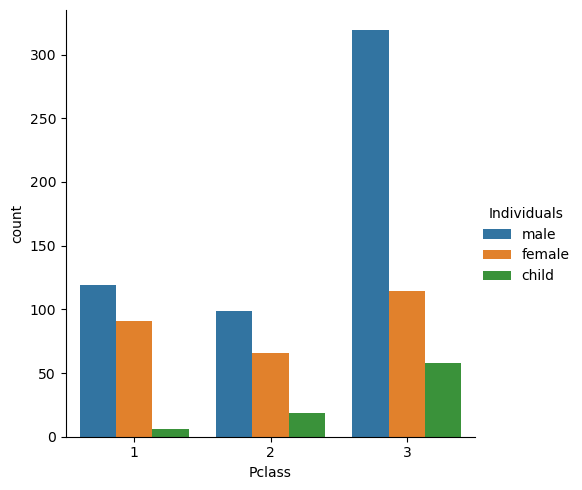
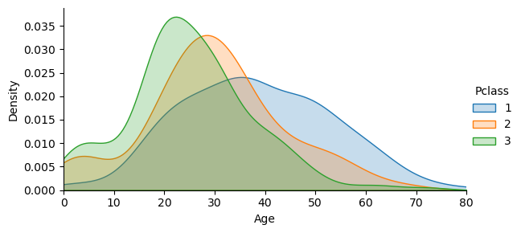
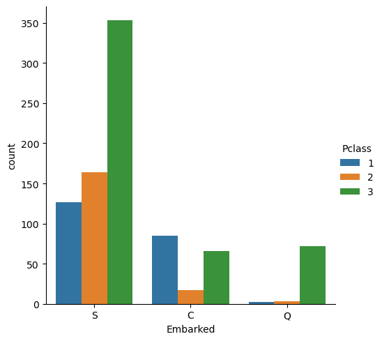
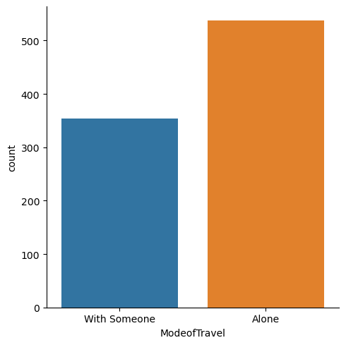

Titanic Dataset: Exploratory Data Analysis#

This is an EDA of the famous Titanic (shown in Fig.1) dataset from Kaggle. Through EDA, I will try to achive the following goals:
Investigate the demographic characteristics of the Titanic’s passengers, such as their age, gender, and social class, to gain a better understanding of the composition of the passenger list.
Explore the origins of the Titanic’s passengers, including their countries of origin, to gain a better understanding of the cultural diversity of the passenger list.
Determine which passengers traveled with their families and which ones traveled alone to gain insights into the social dynamics of the passengers.
| Pclass | Name | Sex | Age | SibSp | Parch | Ticket | Fare | Cabin | Embarked | |
|---|---|---|---|---|---|---|---|---|---|---|
| 0 | 3 | Braund, Mr. Owen Harris | male | 22.0 | 1 | 0 | A/5 21171 | 7.2500 | NaN | S |
| 1 | 1 | Cumings, Mrs. John Bradley (Florence Briggs Th... | female | 38.0 | 1 | 0 | PC 17599 | 71.2833 | C85 | C |
| 2 | 3 | Heikkinen, Miss. Laina | female | 26.0 | 0 | 0 | STON/O2. 3101282 | 7.9250 | NaN | S |
| 3 | 1 | Futrelle, Mrs. Jacques Heath (Lily May Peel) | female | 35.0 | 1 | 0 | 113803 | 53.1000 | C123 | S |
| 4 | 3 | Allen, Mr. William Henry | male | 35.0 | 0 | 0 | 373450 | 8.0500 | NaN | S |
<class 'pandas.core.frame.DataFrame'>
RangeIndex: 891 entries, 0 to 890
Data columns (total 10 columns):
# Column Non-Null Count Dtype
--- ------ -------------- -----
0 Pclass 891 non-null int64
1 Name 891 non-null object
2 Sex 891 non-null object
3 Age 714 non-null float64
4 SibSp 891 non-null int64
5 Parch 891 non-null int64
6 Ticket 891 non-null object
7 Fare 891 non-null float64
8 Cabin 204 non-null object
9 Embarked 889 non-null object
dtypes: float64(2), int64(3), object(5)
memory usage: 69.7+ KB
Demographic characteristics of the Titanic’s passengers#
Let’s look at some demographical information about the passengers.
Let’s take a look at socio-economic class of a person (Pclass column)
<seaborn.axisgrid.FacetGrid at 0x17756d3af20>

Let’s explore passangers’ gender:
<seaborn.axisgrid.FacetGrid at 0x17756eefa60>

Figure summary: there were considerably more male passengers onboard.
Note: It is important to acknowledge that gender is not binary and that there are many individuals who do not identify as strictly male or female. However, the dataset available for the Titanic passengers only includes information on male and female passengers. While this limitation may not fully capture the diversity of gender identities among the passengers, it is still valuable in providing insights into the demographics and social dynamics of the Titanic’s passengers.
Let’s now figure out how many kids were on the Titanic:
male 537
female 271
child 83
Name: Individuals, dtype: int64
Now, let’s check teh distribution of men, women and children belonging to different socio-economic classes.
<seaborn.axisgrid.FacetGrid at 0x17757664160>

Figure summary: There are way more male passengers than woman or childeren in the 3rd class than in any other class.
Let’s check out how the age distribution varies for different classes
<seaborn.axisgrid.FacetGrid at 0x177577a73a0>

Figure summary: first class passengers were older that passagenrs of other class
Explore the origins of the Titanic’s passengers#
The Embarked columns are abbreviation of the following port of embarkation:
C = Cherbourg
Q = Queenstown
S = Southampton
sns.catplot(x='Embarked',data=titanic_df,hue='Pclass',kind='count')
<seaborn.axisgrid.FacetGrid at 0x177577a7640>

Figure summary: Most of the 3rd class passengers embarked from Southampton
Determine which passengers traveled with their families#
we need 2 columns:
SibsSP : number of siblings or spouses that a passenger had aboard.
Parch : number of parents or children someone had on the ship.
We can combine teh column to determine whetehr the passanger was alone or with someone and record in in ModeofTravel column:
#Adding the number of family a passenger had onboard
titanic_df['ModeofTravel'] = titanic_df.SibSp + titanic_df.Parch
titanic_df['ModeofTravel'] = titanic_df['ModeofTravel'].apply(lambda x: 'With Someone' if x > 0 else 'Alone')
<seaborn.axisgrid.FacetGrid at 0x177579d9930>

Figure summary: The majority of people on the ship travled with someone.